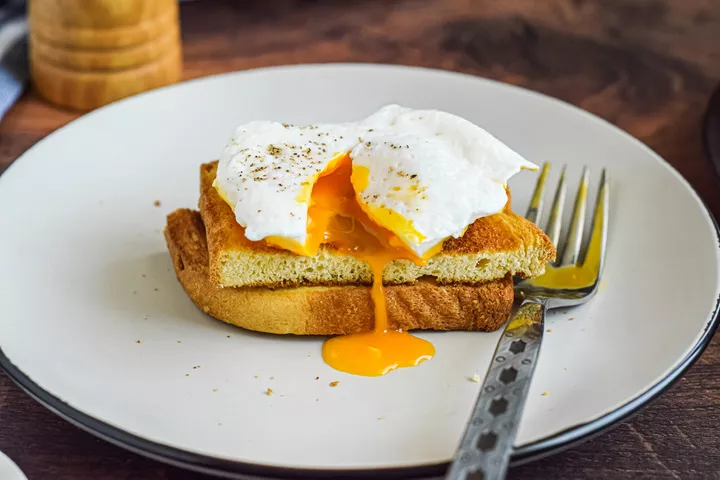

Classic Poached Eggs

Description
Want to add a real wow factor to your next brunch? With a few simple steps,
you can whip up your very own restaurant-worthy poached eggs in five
minutes flat.
- Prep time: no prep time needed
- Cook time: 5 minutes
- Servings: 2
Ingredients
- 2 eggs
- 15 mL (1 tbsp) white vinegar
- 1 whole grain English muffin, split and toasted
- Pinch fresh ground pepper
Steps
- Bring a saucepan of water just to the boil. If it starts to boil, reduce heat so it is barely simmering.
- Crack an egg into a small bowl. Stir the vinegar into the water.
- Lower the bowl with the egg in it close to the water and gently slip the egg into the water. Repeat with remaining egg. Let eggs cook for about 3 minutes or until whites are set and yolks are soft, leave in longer for a firmer poached egg. Using a slotted spoon, remove eggs, one at a time.
- Place one egg on each muffin half and sprinkle with pepper to serve.